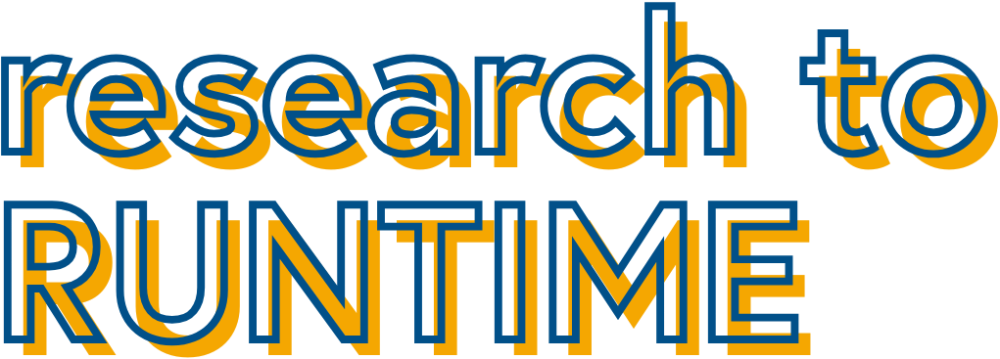

Research to Runtime is a series for entrepreneurs, developers, and technical leaders building with AI. Co-hosts Talia Goldberg and Bhavik Nagda go behind the scenes with prominent AI engineers and founders to showcase how cutting edge products are actually built. They dive into best practices for building with AI, break down real-world tactics, and discuss the frontier of what's possible.
On deck:
- 9/3 - Vector retrieval, evals, and agentic memory – Simon Eskildsen, Tubopuffer CEO and Ankur Goyal, CEO at Braintrust - RSVP HERE
- 9/10 - AI agents and durable execution – Samar Abbas, Temporal CEO and Lucas Haarmann, early engineer at Hebbia
Upcoming live events & sessions
- TBD - Vector retrieval, evals, and agentic memory – Simon Eskildsen, Tubopuffer CEO and Ankur Goyal, CEO at Braintrust
- Baking with code agents – Boris Cherny, Claude Code co-creator (video)
- MCP and tool use – Samuel Colvin, Pydantic CEO and David Soria Parra, MCP co-creator (video)
- Intercom's AI transformation – Jordan Neill, SVP Eng at Intercom (post)
- AI-native design engineering – Cedric Ith, Design Lead at Perceptron (post, video)
- Cursor rules, literally – Jordan Topoleski, COO at Cursor (video)
Contact talia@bvp.com and bnagda@bvp.com for more info or to RSVP to an upcoming session.